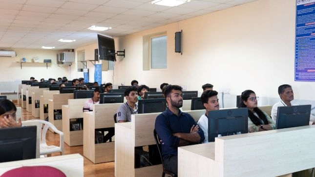
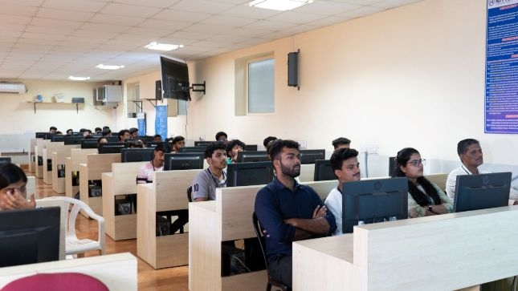

NMAMITis located in a vibrant, serene and green campus at Nitte spread over 125 acres and is nestled in the Western Ghats of Southern India on the way to the Kudremukh ranges. The nearest airport is Mangaluru International Airport (45 km). The nearest railway stations are Udupi (40 km) and Mangaluru (50 km). Nitte is 19 km from NH-66 connecting Kochi (Kerala) and Panvel (Mumbai) and 7 km from NH-169 connecting Mangaluru and Solapur (Maharashtra).
The Institute offers UG engineering program in fifteen disciplines; Artificial Intelligence & Machine Learning (AI&ML), Artificial Intelligence & Data Science (AI&DS), Biotechnology (BT), Civil Engineering(CIV), Computer & Communication Engineering (CCE), Computer Science & Engineering(CS),Computer Science (Cyber Security), Computer Science (Full Stack Development), Electrical & Electronics Engineering (E&E), Electronics & Communication Engineering (E&C), Electronics (VLSI Design & Technology), Electronics & Communication Engineering (ACT), Information Science & Engineering (IS) , Mechanical Engineering(MECH) and Robotics & Artificial Intelligence (R&AI ).
We the members of NMAMIT recognize our students, their parents as well as their prospective employers as our esteemed Customers. We commit ourselves to provide education to our students as per stipulated syllabus using the best practices in order to achieve Customer delight. Our target is to reach the position of the best technical Institutes in India and we aim at sustaining this position.
To develop NMAM Institute of Technology, Nitte, as Center of Excellence by imparting Quality Education to generate Competent, Skilled and Humane Manpower to face emerging Scientific, Technological, Managerial and Social Challenges with Credibility, Integrity, Ethics and Social Concern